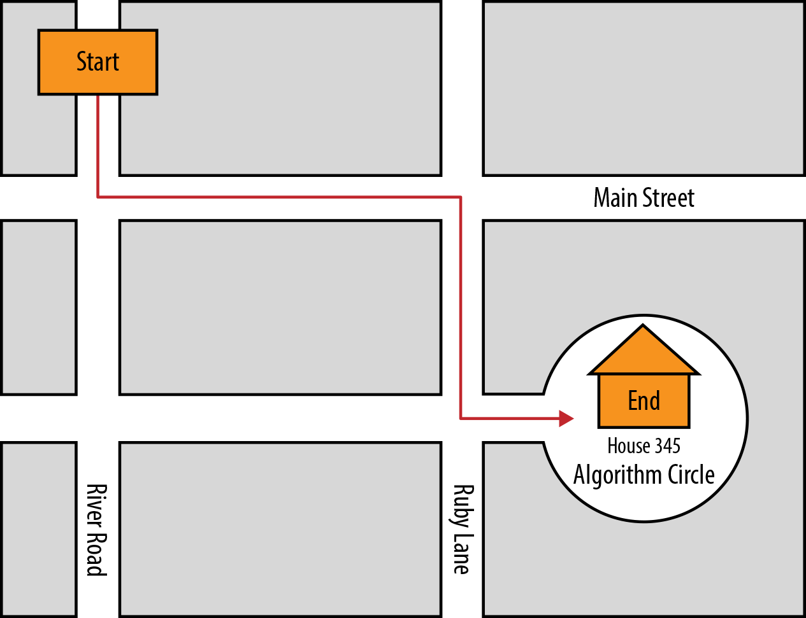
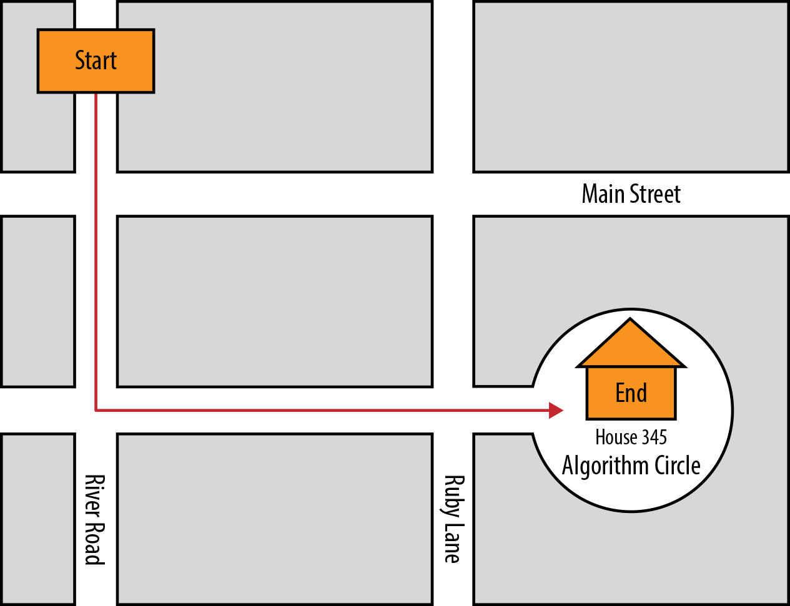
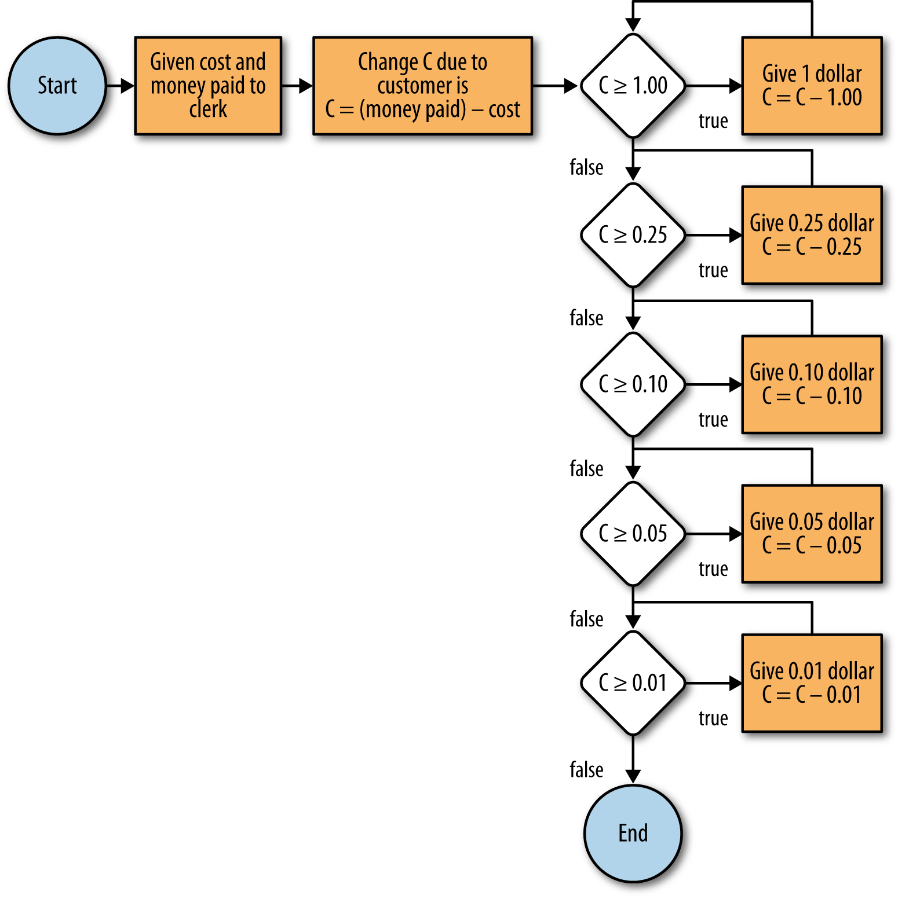
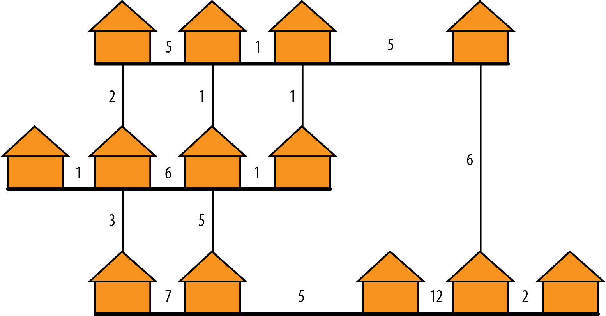

Computers only do useful or fun things because they run programs. Computer programs are sets of instructions that are given to the computer. They are fairly precise. If you mis-spell a word the computer won't understand what you meant. If you add an extra comma somewhere its not like your English teacher will just circle it and move on. Your program won't work.
Hence, new people to computer programming often struggle just to get the basics working. They usually have to set up a whole programming environment which is often a barrier to learning. With this course, you just click on things and enter some answers and POOF you are writing a computer program.
It turns out there is a whole SCIENCE to studying how to really make a computer solve problems. That is called Computer Science and not Computer Programming. Why? While, it turns out you can study and compare different ways of getting the computer to do something and you can mathematically figure out the best way to do things. So if all you do is get computer programs to work you may miss out on some good lessons learned from people who have studied this for the past fifty years. Think about planting crops. You can do it with a shovel or you can use a tractor. If you are in a world where you haven't even heard of a tractor and all you have is a shovel you might resign yourself to digging the dirt shovel by shovel. One day you'll learn about the tractor and say WOW -- sure wish I had known about that tractor before I spend 30 days in the heat shoveling this field!
So once you get the basics of Computer programming its awfully good to start to learn about computer science and learn what tractors have been developed that will make your life significantly easier. Computer Science also provides ways to solve problems so when faced with a new problem, you will not just throw up your hands, you will have a methodical approach to solving it. So we want you to learn not just computer programming but we want you to learn a little Computer Science as well.
Computer Science is all about concepts and approaches needed to solve problems using a computer. Computer Programming is just about writing a program in a particular programming language. People who just get a program to work in a given language are often fine, but well then, due to various reasons different programming languages become popular. Primarily because Computer Scientists are always trying to come up with new programming languages that will make life easier for programmers. So lets say you decide Ruby (the language we have picked for this course because its so super easy to get started) and then ten years from now some other language comes along that you've never heard of. IF you have the basics of Computer Science in your head, well then you know that the language is just a tool (e.g.; like a shovel, like a tractor) and you adapt quickly because you will know the common things the tool should be able to do and how it will probably work. If you have ignored Computer Science you will thing OH GOODNESS -- how I am to start ALL OVER and LEARN a WHOLE NEW LANGUAGE.
So that's why we harp on teaching some Computer Science along the way with teaching Ruby.
We've decided to try something new with this course. A typical course would teach you all the different commands you might use when programming in Ruby. Then it would start to put them together. We've decided that's too boring and its not so great because if we give you a list of ten commands and you don't use them right away - well you'll probably forget at least a couple of them along the way. Then when we want to use them you'll be lost. So it is for most students taking a course that covers a programming language -- we know as we have taught for over 25 years.
So lets try something new. Lets pretend we are the master and you are the apprentice and lets say we are building a house. If we need you to hammer a nail we say HEY APPRENTICE, come HAMMER THIS NAIL NOW! You have never hammered one. You look blankly at us. We shrug and moan about the troubles with new apprentices. We then pick up a hammer and hammer a nail. We look at you and say GOT IT? You nod and then pick up the hammer the wrong way. We sigh and moan and say NOT THAT WAY, THIS WAY. Then you pick it up correctly. We grumble GOOD. You then hammer the nail sideways so its not straight. We SIGH and MOAN. We say NOT LIKE THAT -- EINSTEIN -- STRAIGHT. I have no idea why I hired you as an apprentice. Then we take the nail out and give you new one and say TRY AGAIN. You do it right. We say GOOD. Now do FIFTY MORE JUST LIKE IT. And so you learn. And you probably don't forget.
With a book we can't really have that interaction.
With an electronic course we think we can and we are eager to try. We think a lot of people could learn programming if they were taught this way and we think a typical book sort of bores a lot of people or confuses them and they just give up or decide not to try. So give it a try and send us feedback so we can refine the course -- but over time we think it'll be a success.
Ready for your first nail to hammer? Good because that is what we are going to do. We are going to do one problem in this e-course and only one and we are going to work with you to make it so you absolutely know how to do it. We have picked the game of blackjack for this course as its one of the first programs that one of the authors was asked to write when he took an intro to computer science course and he loved it and it made it so all he wanted to do was study computer science. So if it worked for him -- well then maybe it'll work for you.
So first you have to know how to play black jack. Its a card game. There are 52 cards in a deck and they have numbers on them. If you have never seen a deck of cards then follow
dagr1234
this link
to read about decks of cards. Anyway its played between one player and a dealer. There are different versions but we are going to make this one simple.
The dealer deals two cards to a player and one card to the dealer. The dealer shows the player his/her card (for the rest of this course we are calling the dealer a HE but we don't care what gender the dealer is).
The rule is the player wins if the player does not go over 21. Face cards (e.g.; J, Q, K) count as 10 and the Ace counts as 1 or 11. If 11 makes you go over 21, then count the Ace as a one.
So the player gets to decide, HIT or STAND at this point. If the player says HIT they get another card. If the player's total goes over 21 well then they lose immediately. If the number is under 21, the player can decide HIT OR STAND again. So lets say the player is dealt a 5 and 2. The player has a total of 7. The players says HIT and gets a 10 and then the player says STAND. Now the player has a total of 17. The dealer now makes no decisions and must follow strict rules. Up to a 16 the dealer takes a HIT and at 17 and above dealer stands. So lets say the dealer on the first card has a 10. Dealer, by rule, takes a HIT and gets an 8. Total is 18. Dealer by rule stands as its over 16 and so the dealer's total is compared to the player's total. Dealer has 18, player has 17 and player loses. Note, if the dealer had gone over 21 with a HIT, they lose immediately. In a casino, the player loses the money they have bet on the hand. And so the game continues until the player has run out of money or has won enough to win. We hate to bring you into a life of gambling with this e-course, but its an awfully good game to learn how to program. It also allows for a lot of incremental improvements that we can make over time. So in our master-apprentice model you can start building the basic house (e.g.; game of blackjack) and then we can add a fancier roof or put in a special kitchen, etc.
Time for your first nail.
When the user tells the computer I WANT TO PLAY BLACKJACK -- we want to start the game and say HELLO to the user and remind them of the basics of the rules.
In Ruby the way to show the user something is with the command puts (put string).
Now click here and enter this into the ruby code editor that launches and type the following:
puts "Welcome to Blackjack. Dealer will always hit on a 17, over 21 and you lose"
Enter those this line and try it and see if the computer does the right thing. IF its works CONGRATULATIONS you have hammered your first nail. Remember to use double quotes around the rules (the key two to the right of the L key on your keyboard and you have to hit shift to get the quotes to display).
Now lets learn how picky this stuff can be.
Change one of the puts commands to put.
You'll get a great message:
NoMethodError: undefined method `put' for main:Object
You'll get a nice message of "NoMethodError: undefined method for put". So annoying that computers have to always care about every last little letter. Notice that its speaking greek immediately. Well first it tells you the type of error you have followed by a colon. In this case you got yourself a nice NoMethodError. What on earth is a method and why in heavens is it bad to not have one?
Well it turns out a method is piece of code that you might want to repeat. Terrific name isn't it. Some languages call it a function. Bet that doesn't help either, but if you remember in math, functions are used to make life easier to express equations. You could say y = x + 2 but if you define a function on x you'd have f(x) = x + 2 and then you could then say y = f(x) . For really long equations y=f(x) is way easier to look at then the whole equation.
Anyway, you simplify your computer programs with methods and we'll get to all that later. We just wanted you to know its a thing that comes in handy to make it so you don't have to write the same programming code over and over. So Ruby has a way to make it so you can define new methods. When you entered puts, that actually referenced a method the people who invented ruby built to output whatever you put in quotes to the screen.
When you got rid of the S, the ruby interpreter (the thing that processes each Ruby command) decided you must have written your own grand method called PUT and it looked for it. It couldn't find it so it threw up its hands and said, HEY you must be so SMART that you have written your very own method and now sadly I can't find it.
Now fix your PUT to PUTS and get it to work again.
Now lets break something else. Lets get rid of the double quotes.
so your code will now look like
puts Welcome to Blackjack. Dealer will always hit on a 17, over 21 and you lose
Now you get a nice error message
NameError: undefined local variable or method `blackjack' for main:Object
Aren't you glad you are doing this with such friendly error messages? Well now the Ruby interpreter says you entered PUTS correctly so it was thinking you would follow it with a nice piece of text in quotes so that Ruby (and a lot of other languages) would think you were referring to a thing called a STRING. A STRING is a type of data that can be output nicely to the screen and it can include numbers and letters. You can't do math on a string like ask the computer to divide one string by another string.
The truth is the Ruby interpreter when using the puts method looks for a variable that is of type STRING to come next.
So you could say puts "hello" and that assigns "hello" to a variable (a thing that hold different values over time) and then displays it.
if you said
x = "hello"
puts x
that will assign "hello" to the variable named x and then output x.
When you took off the quotes around Welcome to blackjack -- ruby thought you were referring to a variable named WELCOME. It thought somewhere you must have been smart enough to assign it a value. So it looked in its entire lexicon of variables for welcome and didn't find it so it gave you a NAME ERROR thinking you must have mis-spelled the variable. Then it said undefined local variable. In Ruby you can use a method to obtain values so either a variable or method would work so it went ahead and looked for methods named blackjack as well. It didn't find one so it said "undefined local variable or method" then it was nice enough to tell you what it couldn't find -- it was hunting for blackjack and it didn't find it and so it even told you what it was hunting for (and we just put it in italix).
NameError: undefined local variable or method `blackjack' for main:Object
Ruby uses a thing called OBJECTS and they are just containers that contain methods and variables -- we'll be using them for various things in the game. CARD, DEALER, PLAYER are all good objects, but we'll talk more about that later.
Anyway the Ruby interpreter hunted in the current object called MAIN and couldn't find anything so it told you where it was looking in main:object.
So the Ruby interpreter spat out a bunch of gibberish but if you take a deep breath and read it slowly it can often contains hints on how to fix things. Most people new to programming see an error message and it has stuff in it that makes zero sense and so they just skip it and ask the teacher how to fix the problem. As your MASTER and you as APPRENTICE we now COMMAND you to READ EVERY ERROR MESSAGE TEN TIMES before doing anything else. Read it slowly. Trust us, it'll make you far more productive.
Anyway, fix your program, put the quotes back and get it to work again.
Ready for your next nail?
dagr1234
Maybe have a link to the rest of this chapter here as background -- its got good stuff in it but not sure we need it in the dialog of this e-course.
Computer science is never tied to a programming language; it is tied to the task of solving problems efficiently using a computer. A computer comes with some resources, which will be discussed in , such as internal memory for short-term storage, processing capability, and long-term storage devices. A complete program is a set of instructions that use the computer to solve a real problem. The tool for producing these instructions is called a programming language. The goal is to develop solutions that use these resources efficiently to solve real problems.
Programming languages come and go, but the essence of computer science stays the same. If we need to sort a sequence of numbers, for example, it is immaterial if we sort them using programming language A or B. The steps the program will follow, commonly referred to as the algorithm, will remain the same. Hence, the core goal of computer science is to study algorithms that solve real problems. Computer scientists strive to create a correct sequence of steps that minimize resource demands, operate in a timely fashion, and yield correct results.
Algorithms are typically specified using pseudocode. Pseudocode, which may itself be simply written in plain language, specifies the logical, conceptual steps that must occur without specifying the necessary details needed to actually execute each step. However, we think that a properly selected subset of Ruby is sufficiently simple to introduce the algorithms. So, instead of creating an algorithm by writing it in plain language, generating equivalent pseudocode, and transforming it into a programming language, we go straight from the plain-language definition of an algorithm to Ruby code.
1.2 Application Development
When writing a program, it is important to keep in mind that the computer will do exactly what you tell it to do. It cannot think as a human would, so you must provide clear instructions for every step.
When giving instructions to others, people will often fill in blanks in logic without even realizing it. For example, if you instruct someone to âgo to the bank,â you may not say what mode of transportation should be used. A computer, however, does not have the ability to âfill in the blanks.â A computer will only do exactly what you tell it to do.
Imagine, for example, explaining to a person and to a computer how to make a peanut butter and jelly sandwich. To the person, all you might need to say is, âSpread the peanut butter on one slice of bread, the jelly on the other slice of bread, and then put the pieces of bread together.â If these instructions were given to a computer, however, the computer would not know where to start. Implied in these instructions are many logical steps that a human can automatically infer and the computer cannot. For example, the human would know that the jar must first be opened to scoop peanut butter out before you can spread it onto a slice of bread. The computer might try to spread the actual jar across the bread, without taking the peanut butter or jelly outâassuming it could even find them!
Computer science is ultimately about problem solving. The following is a basic approach to solving problems:
Step 1: Understand the problem.
Step 2: Write out a solution in plain language.
Step 3: Translate the language into code.
Step 4: Test the code in the computer.
Step 1: Understand the Problem
During this step, you try to answer all questions about the problem at hand. For example, you may be asked to create a program that stores a list of names, like a directory. Instead of just creating this program with little forethought, it is important to know all the details of the problem. Here are some examples:
How many names will be stored?
Do first and last names need to be stored separately?
Are middle names needed?
What is the maximum length that a name can be?
Step 2: Write Out the Solution in Plain Language
Once the problem is understood, the next step is to write an outline of how you will solve it. An example of the process of storing a name might look like a sequence of sentences:
Ask for the first name.
Store the first name.
Ask for the last name.
Store the last name.
Optionally, ask for the middle initial.
Store the middle initial.
Step 3: Translate the Language into Code
Once the plain-language version is written, it is time to translate it into actual code. The Ruby code for the preceding example is shown in , but you are certainly not expected to understand it yet.
Note the pound sign (#) on the righthand side. This sign means that the remainder of the line is a comment. A comment is not part of the instructions given to the computer. That is, a comment is a nonexecutable segment of code. Typically, comments are used to explain what the code does. Not only is it critical to comment code for the sake of readability and understanding, but using comments is considered good programming style, and the liberal use of comments is essential. Always remember that you (or someone else) may have to fix errorsâcolloquially referred to as bugsâyears after you write a program; comments will help you understand what your code does years after you initially wrote it.
Plain language â Ruby code
1 puts "Enter first name: " # Ask for the first name
2 first_name = gets # Store the first name
3 puts "Enter last name: " # Ask for the last name
4 last_name = gets # Store the last name
5 puts "Enter middle initial: " # Ask for the middle initial
6 middle_initial = gets # Store the middle initial
Step 4: Test the Code in the Computer
This step entails running the program you created and seeing that it runs properly. It is best to test portions of your code as you write them, instead of writing an entire program only to find out that none of it works.
1.3 Algorithms
Algorithms are step-by-step methods of solving problems. The process of reading in names previously described is an example of an algorithm, though a very simple one. Some are extremely complicated, and many vary their execution depending on input. Often algorithms take input and generate output, but not always. However, all algorithms have something in common: they all do something.
Gem of Wisdom
Algorithms are the core of computer science. Correct and efficient algorithms guarantee that the computer works smart rather than only hard. Thus, think about the problem, come up with a good algorithm, and then determine how many steps the computer needs to complete the task.
Imagine a website like Google Maps, which has an algorithm to get directions from one point to another in either North America or Europe. It typically requires two inputs: a source and a destination. It also gives two outputs: the narrative directions to get from the source to the destination, and a map of the route.
The directions produced are also an algorithm; they accomplish the task of getting from the source to the destination. Imagine getting the directions to your friendâs house shown on the map in .
Start going south on River Road.
Turn left (east) on Main Street.
Take a right (south) on Ruby Lane.
Turn left (east) toward Algorithm Circle.
Continue until you come to 345 Algorithm Circle (your friendâs house).

Directions âalgorithmâ
First notice that the directions are numbered; each step happens in sequential order. Additionally, it describes general steps like, âTurn left (east) on Main Street.â It does not say, âTurn on your left turn signal and wait for the light to turn green, and then turn left on Main Street.â That is not the point of an algorithm. An algorithm does not need to write out every single detail, but it needs to have all the important parts.
1.3.1 Algorithm Efficiency
Different algorithms may accomplish the same task, but some will do it much faster than others. Consider the algorithm just described for going to your friendâs house, which certainly is not the only route to her or his home. Instead of getting on Ruby Lane, you could have hopped on the expressway, gone to the airport, and then taken a cab from the airport to your friendâs houseâbut that would be extremely inefficient. Likewise, there may be a more efficient route to your friendâs house than the one described. Just because you have created an algorithm does not make it efficient, and being able to create efficient algorithms is one of the factors that distinguishes a good computer scientist. For example, imagine receiving the following set of directions to your friendâs house instead of the ones shown in the previous section, illustrated on the map in :
Start going south on River Road.
Turn left (east) one block south of Main Street onto Algorithm Circle.
Continue until you come to 345 Algorithm Circle (your friendâs house).

Directions âefficient algorithmâ
Here we use a different algorithm that accomplishes the same task, and it does so slightly more efficiently. That is, fewer turns are involved.
1.4 Summary
You now understand the core foundations of computer science, namely the use of algorithms to solve real-world problems. Ruby, as used throughout the remainder of the book, is a powerful, yet relatively easy to understand, programming language that can be used to implement these algorithms. It is, however, critical to remember that independent of the programming language used, without a good algorithm, your solution will be ineffective.
1.4.1 Key Concepts
The essence of computer science is problem solving. Computer science involves using the computer as a tool to model or solve various problems, from storing names in a database to finding efficient directions to a friendâs house.
When programming, it is important to understand that the computer is never wrong. It is merely following the directions you have given it.
The following are basic steps for solving a computer science problem:
Step 1: Understand the problem.
Step 2: Write out a solution in plain language.
Step 3: Translate the language into code.
Step 4: Test the code in the computer.
Algorithms are step-by-step methods for solving problems. When writing an algorithm, it is important to keep in mind the algorithmâs efficiency.
Gem of Wisdom
Once we have an algorithm, we can compare it to other algorithms and pick the best one for the job. Once the algorithm is done, we can write a program to implement it.
1.4.2 Key Definitions
Algorithm: A step-by-step method for solving problems.
Algorithm efficiency: A measurement that determines how efficient one algorithm is compared with another.
1.5 Exercises
Imagine that you are creating a pocket calculator. You have created the functionality for all the buttons except x2, the button that squares a number, and exp, which allows you to calculate baseexponent, where exponent is an integer. You may use any other functionality a calculator would normally have: for example, (+, -, *, /, =).
Create the functionality for the x2 button.
Create the functionality for the exp button.
In the third-grade math class of French mathematician Carl Gauss, the teacher needed to give the students some busywork. She asked the class to compute the sum of the first 100 numbers (1 to 100). Long before the rest of the class had finished. Carl raised his hand and told his teacher that he had the answer: 5,050.
Craft an algorithm that will sum the first n numbers (assuming n ⥠1). How many steps does your algorithm take to complete when n = 100? How many steps does it take when n = 1,000?
Can you create an algorithm like Gaussâs where the number of steps does not depend on n?
A palindrome is a word or phrase that reads the same way forward and backward, like âracecar.â Describe a sequence of steps that determines if a word or phrase is a palindrome.
Consider the three mazes shown in . Describe two different algorithms for solving a maze. Discuss advantages and disadvantages of each algorithm. Then look at the maze and predict which algorithm will complete first. See if your predictions were correct by applying your algorithms to the mazes.
Three mazes for Exercise 4
shows an alternative way to represent an algorithm. (Note: we introduce this construct in detail later on. If it looks too intimidating, skip it until after youâve read .)
Starting at the circle labeled âStartâ work your way through the figure. What is the purpose of this algorithm?
Translate the figure into simple language. Note that a diamond in the figure represents a condition that may be true or false.

Alternative representation of an algorithm for Exercise 5
A cable company must use cables to connect 15 homes together so that every home is reachable by every other home. The company has estimated the costs of different cable routes ( shows the numbers associated with each link). One engineer provides an algorithm, shown in , that will find the cheapest set of routes to pick. Does the engineerâs algorithm work for this case? Why or why not?

Cable company dilemma for Exercise 6
Engineerâs Algorithm:
Pick one cable route with the lowest cost not already picked. Add this route to the set of cheapest routes.
Check if every house is connected to every other house through any series of cables. If it isnât, go back to step 1. If every house is connected, then the cheapest set of routes has been found.